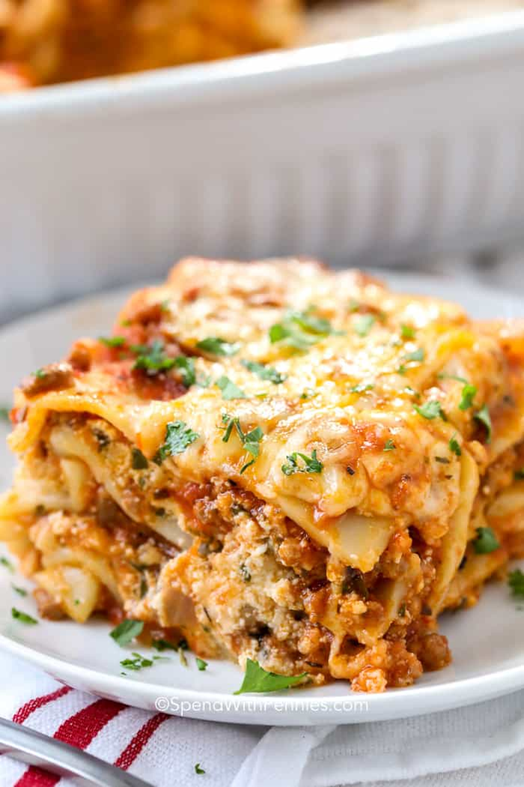

Lasagna

Wanting More Layers Lasagna
The lasagna recpie that makes you want to go buy a bigger dish pan for more layers!
Also the possibilties to add more ingredients or substitute ones are endless! Such as ricotta, sasusage, or spinach!
This dish will feed an army if it had too! You cant go wrong with this perfect classic!
Ingredients
- 2 lbs of beef
- 5 cups of pasta sauce
- 1 package of lasagna noodles
- 2 cups of cottage cheese
- 1 cup of parmesan
- 16 oz of sourcream
- 1 lb of mozzarella cheese (sliced)
- 3 Teaspoons minced garlic
- 2 Tablespoons of basil
- 1 Tablespoon oil
- pinch of salt to taste
Directions
- Preheat oven to 350 degrees
- Saute garlic in oil
- Add basil, salt, and pasta sauce and simmer for 10 minutes
- brown beef then add sauce to simmer
- In bowl, combine sour cream, cottage cheese, and parmesan
- in 9x13, spread 1 cup of sauce on bottom. Layer noodles, sauce, mozzarella, cheese mix, Repeat
- Bake at 350 degrees for 25 to 30 minutes
- Add cheese and bake for 5 minutes
- Let dish cool for 1 hour